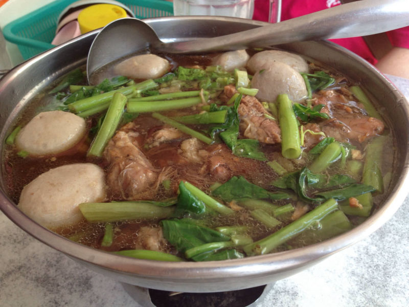
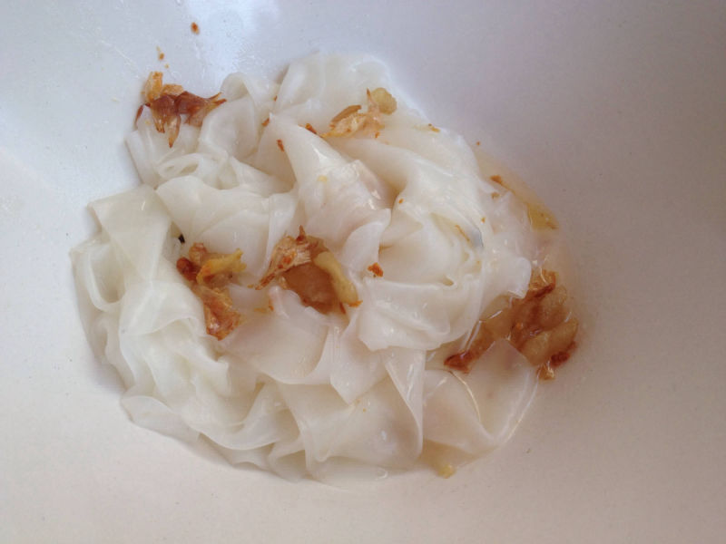
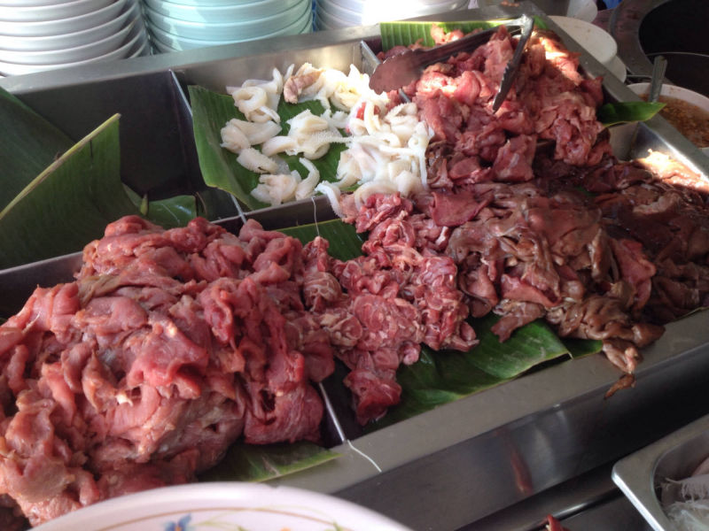

曼谷 “Satupradit Pier Braised Beef Noodle 沙都码头牛肉粉”
传统的船河（Boat Noodle）是以前在小船上卖的面食。曼谷的河道交纵复杂，以前是主要的交通系统；而船粉因此而生。一般来说，船河是河粉加上肉丸和肉片，有牛肉或猪肉选择，不过牛肉口味比较受欢迎。
Sathupradit Pier - 曼谷沙都码头是当地人使用的码头。这家位于码头大门边的小店，极可能賣着全曼谷最美味的牛肉船河。在这家店的门口，架起了2个大铜锅，其中一锅里面炖煮着满满的牛腩和牛筋，另外一锅就焖着牛柏葉、牛肺和牛腸等等的内脏。当中最大的汤锅煲着一大锅的牛骨汤，一旁还有一大盘的生牛肉片和牛肝，准备现烫现吃。
吃船河，最让人欲罢不能的便是那一口汤。所有的材料，放入一个小火锅慢火边炖边吃。一上桌那股浓郁的香气便窜入鼻孔。一眼望去，似清還濁的汤头。入口感觉喝了整只牛的精华，很浓，很鲜，很牛逼。据说，其秘密是 “牛血”。原來為了令牛河的味道更突出，每一碗或锅里都会添加一勺的新鲜牛血，放在牛肉湯中輕輕一煮，成了湯底。所有的材料都非常軟腍入味，没有过软或过硬的的状况，火候掌握一流。
另外来一碗拌了猪油的河粉（粿条），加点炸猪皮，非常另类，也非常好吃；相信没有几个客人离开时，碗里不是空空的。。。。。。
Posted on Feb 2015
Satupradit Pier Braised Beef Noodle
Sathu Pradit Rd, Khwaeng Bang Phong Phang, Khet Yan Nawa, Krung Thep Maha Nakhon 10120, Thailand
+66 2 682 0156
Mon-Fri: 0800-1800
Sat: 0800-1700
Sun: Closed